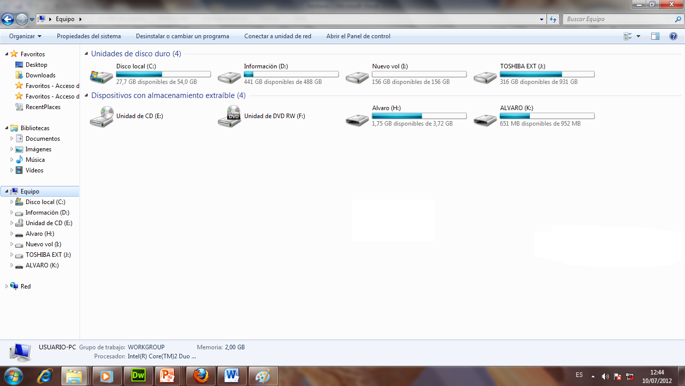
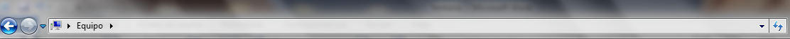
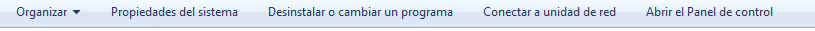
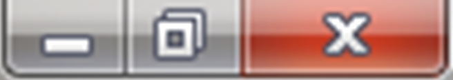
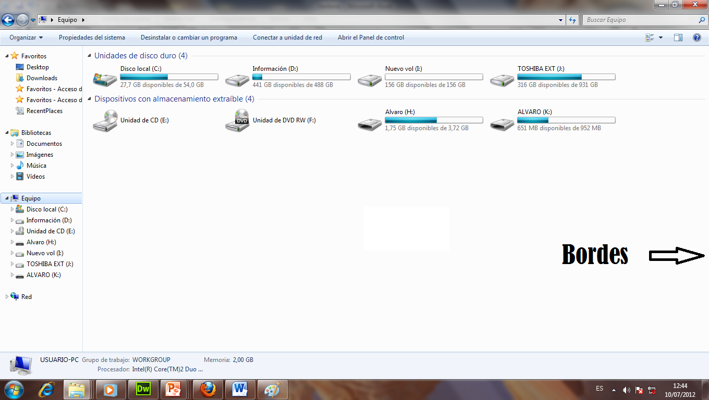

Ventanas de Windows

Una ventana es un área visual, normalmente de forma rectangular, que contiene algún tipo de interfaz de usuario, mostrando la salida y permitiendo la entrada de datos para uno de varios procesos que se ejecutan simultáneamente. Las ventanas se asocian a interfaces gráficas, donde pueden ser manipuladas con un puntero.
Las ventanas se representan casi siempre como objetos bidimensionales colocados en un escritorio. La mayoría de las ventanas pueden ser redimensionadas, movidas, ocultadas, restauradas, y cerradas a voluntad. Cuando dos se superponen, una está encima de la otra, con la parte tapada de la ventana de abajo no visible.
Entre las partes de una ventana tenemos lo que a continuacion se describe:
- Barra de titulos
- Barra de Herramientas
- Boton Minimizar, Maximizar o Restaurar y Cerrar
- Bordes
- Area de Trabajo
Barra de titulos
Muestra el titulo o nombre de la ventana. Además sirve para mover la ventana de un lado a otro.

Barra de Herramientas
Tambien se le llama barra de control, en aquella estan todas las opciones que se pueden hacer en la ventana.

Boton Minimizar, Maximizar o Restaurar y Cerrar
Son tres opciones que se encuentran en la parte superior derecha de la ventana.

- Botón Minimizar: Hace que la ventana se oculte y figure solo en la Barra de tareas.
- Botón Maximizar: Permite que la ventana ocupe todo el escritorio. Cuando una ventana esta maximizada los bordes desaparecen y el botón maximizar cambia por el de Restaurar. Restaurar: Permite que la ventana vuelva a presentar la apariencia que poseía antes de realizar una operación de minimizar o de maximizar.
- Botón Cerar: Oculta la ventana cerrándola completamente. Esto se realiza tambien con la combinación de teclas Alt+F4
Bordes
Delimitan el tamaño de la ventana, pueden cambiar porbarras de desplazamiento en los programas de Microsoft Office.

Area de Trabajo
Es el lugar donde se realizan las tareas especificas de cada ventana.